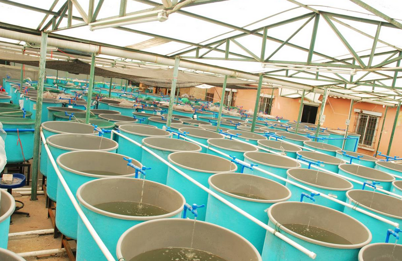
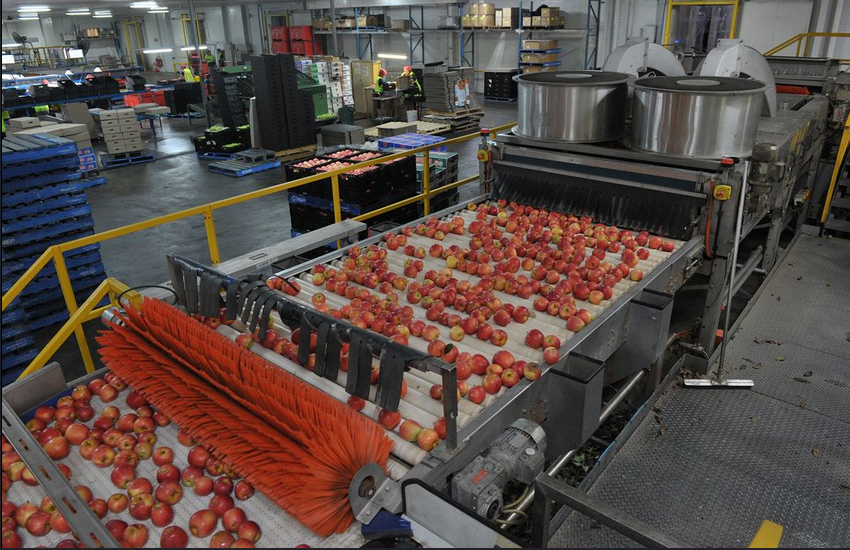

Latest Articles on Farming & Sustainability
Improving Poultry Health: Tips for a Thriving Flock

Raising healthy poultry requires proper nutrition, a clean environment, and disease prevention measures. Farmers must ensure their birds receive a balanced diet rich in proteins, vitamins, and minerals. Additionally, providing access to fresh water and maintaining proper housing conditions can significantly reduce stress and improve egg production.
Disease prevention is another crucial factor. Regular vaccination schedules, proper hygiene, and biosecurity measures help protect flocks from common infections like Newcastle disease and avian flu. Engaging with a qualified veterinarian for periodic check-ups can further enhance poultry health.
Read More
Best Practices for Aquaculture: Sustainable Fish Farming

Aquaculture is an essential part of modern farming, providing a sustainable source of fish and seafood. To ensure high yields, farmers must focus on water quality management, stocking density, and proper feeding techniques. Maintaining optimal oxygen levels and avoiding overstocking can help reduce stress and disease outbreaks in fish populations.
Sustainable aquaculture also involves responsible feed sourcing. Using organic or naturally sourced feed reduces environmental impact and improves fish health. Integrated systems like aquaponics, which combine fish farming with hydroponic plant growth, further enhance sustainability.
Read More
Agro-Processing in Africa: Unlocking New Opportunities

Agro-processing plays a significant role in transforming raw agricultural products into value-added goods. It helps reduce post-harvest losses, create employment, and boost local economies. Countries across Africa are investing in processing plants for grains, dairy, and fruits to enhance food security and exports.
One key strategy for agro-processing success is access to modern technology and financing. Small-scale farmers can benefit from government incentives and cooperative initiatives that provide training and equipment. By embracing innovation, African agribusinesses can compete globally and strengthen their agricultural sector.
Read More